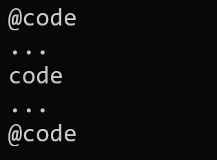
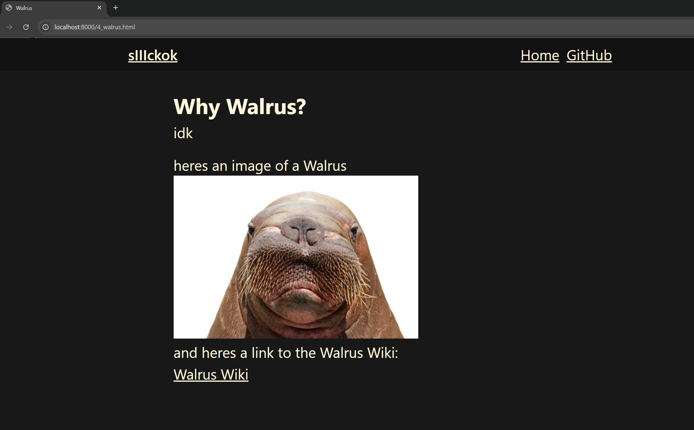

Its quite simple actually...
I wrote a "blog generator" that takes a simple text file
and turn it into a website.
Infact that is how I made this exact blog,
and all the blogs that are in this website.
example.page
Title <--- title
Title goes in the first line
This is actually the title of the webpage itself, and will not show up in the document.
If you want to use the name of the file as the page title, leave the first line blank
This is how you would use links
@a <link name> <link path>
OR
@a <link path>
The same directive "@a" supports both simple links and named links
BTW, you can also do cools things like this
@a this is the name <link>
The "@a" directive actually treats the last element as the path, so you can have names with spaces in them.
It also supports images with "@img"
Use
@img <link-to-image>
you can also use the use code blocks with the "@code" directive like this

If u put it all together you get can make
Walrus
# Why Walrus?
idk
heres an image of a Walrus
@img ./4_walrus_rsc/walrus.webp
and heres a link to the Walrus Wiki:
@a Walrus Wiki https://en.wikipedia.org/wiki/Walrus
Then we get this:

Here is the link to the actual page btw:
Walrus page